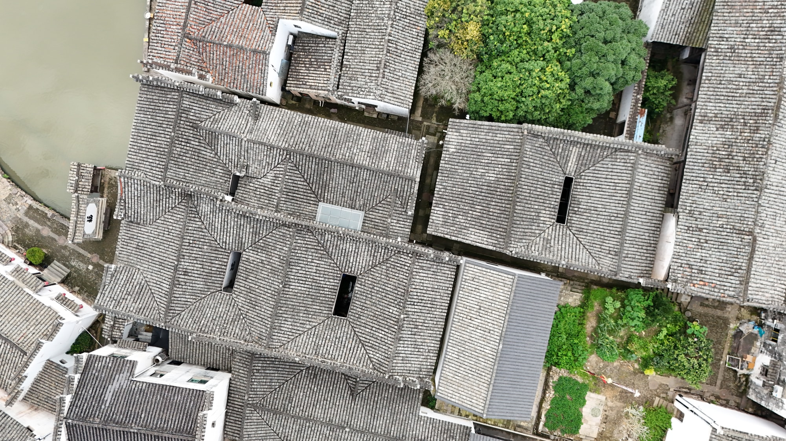
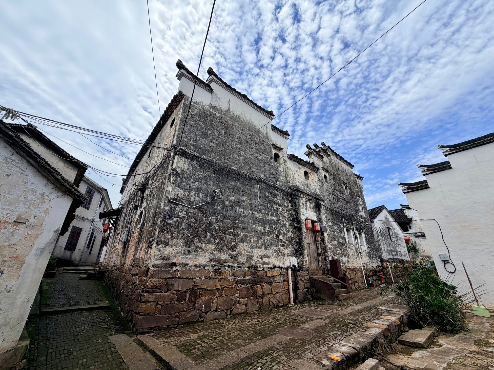

国保传统民居
在古村转角遇见大门里大门里
大门里是全国重点文物保护单位“新叶村乡土建筑”中的一座传统民居。它的名字听来像一处门户，其实指的是一座独立老宅，安静地嵌在新叶村连片的巷宅之间。
01
连片屋面中的一户

从较高处望去，大门里并不孤立在村中，而是与周围民居紧密相接。高低错落的屋面向四周延展，宅院之间留出曲折通道，使这座老宅自然融入新叶村层层相连的传统居住空间。
02
沿着老宅外墙行走

走到近处，视线从开阔的屋面重新收拢到老宅外墙与巷道之间。侧墙、转角和窄窄的通行空间共同形成亲近的步行尺度，也让人感受到新叶民居不是单独陈列的建筑，而是古村日常路径中的一部分。